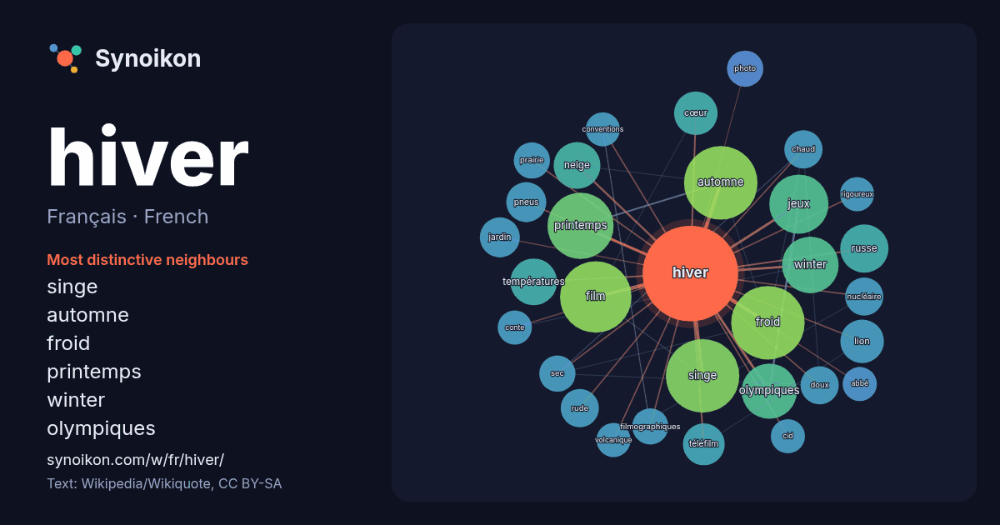

Français · French · word of the day list
hiver
“winter” · The words found around it in 1068 instances from French Wikipedia, Wikiquote.

Most distinctive neighbours
- singe 37×
- automne 37×
- froid 34×
- printemps 25×
- winter 23×
- olympiques 15×
- neige 14×
- lion 13×
- film 13×
- jeux 12×
- téléfilm 12×
- pneus 11×
- russe 11×
- rude 11×
- cœur 10×
- doux 10×
- températures 10×
- chaud 10×
- filmographiques 10.0×
- prairie 9.7×
× = how many times more often than in general French Wikipedia text.
Most frequent neighbours
- automne 37
- froid 37
- singe 37
- film 35
- printemps 30
- jeux 24
- saison 22
- winter 22
- olympiques 21
- paris 17
- jours 16
- russe 16
- neige 15
- températures 15
- climat 14
- grand 14
- cœur 13
- lion 13
- nom 13
- réalisé 13
In context
- Wikimedia : hiver, sur le Wiktionnaire Pour les œuvres portant ce nom, voir l'Hiver. Cet article possède des paronymes, voir Hivert et Yvert. L'hiver est l’une Wikipedia snippets · Hiver
- d’une guerre nucléaire massive. Il serait analogue à l’hiver volcanique ou à l'hiver d'impact. Un hiver nucléaire serait un refroidissement global et durable Wikipedia snippets · Hiver nucléaire
- Hiver à Sokcho Pour plus de détails, voir Fiche technique et Distribution. Hiver à Sokcho est un film franco-sud-coréen réalisé par Koya Kamura et sorti Wikipedia snippets · Hiver à Sokcho
- En hiver ! En hiver ! est une peinture à l'huile sur toile que François‑Alfred Delobbe expose au Salon de 1868, au Palais des Champs‑Élysées. La toile Wikipedia snippets · En hiver !
- marquage « M+S » se retrouve sur la plupart des pneus hiver, la caractéristique de ces pneus hiver est « au bon vouloir du manufacturier », seul le « pictogramme Wikipedia snippets · Pneu hiver
- les autres projets Wikimedia : Hiver québécois, sur Wikimedia Commons Bernard Arcand, « Mon grand-père aimait l'hiver », dans Stéphane Batigne (dir.) Wikipedia snippets · Hiver québécois
- Un hiver volcanique est une baisse de la température provoquée par des cendres volcaniques et des gouttelettes d'acide sulfurique, dues à une forte éruption Wikipedia snippets · Hiver volcanique
- controversé. Une étude militaire américaine de la guerre en hiver en Russie conclut que « le général Hiver » est un mythe perpétué pour rationaliser les défaites Wikipedia snippets · Général Hiver
More French words
- art
- automne
- carte
- chanson
- chat
- chemin
- cheval
- chien
- climat
- cloche
- cœur
- dieu
- désert
- eau
- famille
- forêt
- histoire
- horloge
- jardin
- langue
- miel
- miroir
- monnaie
- montagne
- mort
- mère
- nature
- nourriture
- ombre
- pain
- pluie
- pont
- pouvoir
- printemps
- santé
- science
- sel
- silence
- temps
- tempête
- thé
- train
- travail
- trésor
- vie
- ville
- vérité
- étoile
- île
Precomputed on 2026-10-09 with default settings (±5 words, medium corpus). The interactive map can refresh it with live data.